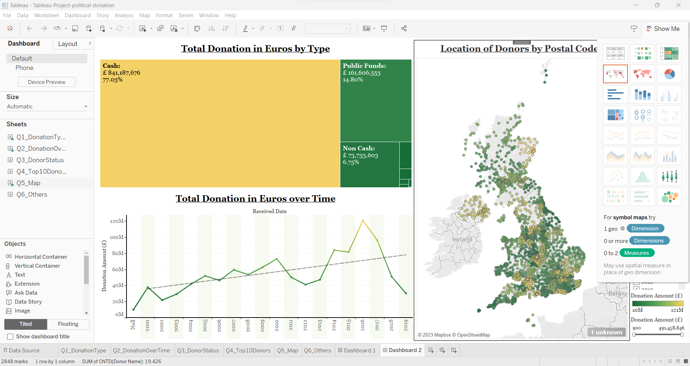

Hey there! I'm Shahbaj, an experienced data enthusiast on a journey of numbers and discovery. With 3+ years of experience in Business Intelligence and an MBA in Business Analytics, I've sprinkled my analytical magic across five years and also learned cloud computing technologies.
.
Originally dreaming of going into science and technology, the enchanting world of data caught my eye. I'm now armed with Python, SQL, Tableau, Power BI, and Excel, weaving insights and turning raw data into stories. I'm not just crunching numbers; I'm cleaning, analyzing, and exploring data then providing reports, insights and automation. Detail-oriented to the core, my skills go beyond equations—I've got an eye for the fine print and a passion for storytelling.
So, if you're seeking a data analyst or business analyst with a blend of academic brilliance and real-world wizardry, you've found your match! Let's decode data together and make the numbers dance! 🚀✨
● Run complex SQL queries on Nashville Housing data using MSSQL.
● Standardised the DATE Format which was in different format.
● Some of the rows in property address where NULL. Populated the property address data.
● Property Address and Owner Address data have the whole address in the single column respectively. Split the address into
individual columns of address, city and state.
● Four different values present in a single column which is Y, N, Yes and No. Changed Y and N to Yes and No in that column.
● Removed duplicates and deleted unused columns.
● Using git commands, pushed the project contents from local to GitHub Data Cleaning repository.

● Run complex SQL queries on covid deaths and vaccinations databases using MSSQL.
● Wrote queries for Total Cases vs Total Deaths, Total Cases vs Population, Countries with Highest Infection Rate compared to
Population, Countries with Highest Death Count, continents with the highest death count per population, Total Population
vs Vaccinations.
● Used SQL Join to combine rows of two tables.
● Used both Temp Table and Common Table Expression(CTE) to create a temporary table and perform calculation on
PARTITION BY.
● Created a VIEW to store data for later exploration.
● Using git commands, pushed the project contents from local to GitHub Data Exploration repository.

● Welcome to "Political Donations Insights," a Tableau dashboard offering visual analysis of political donations in Great Britain and Northern Ireland.
● Explore donation distribution based on payment methods for a comprehensive understanding of contribution modes.
● Dynamic visualization of total donations over time reveals patterns, spikes, and funding trends.
● Gain insights into donor statuses, highlighting the percentage and total value of contributions from individuals, corporations, and entities.
● Identify top contributors with a focus on the Top 10 donors and their total donated values.
● Utilize UK postcode mapping for geographical distribution, showcasing donor activity across Great Britain.
● Beyond specified objectives, the dashboard provides a detailed graph of donations over time categorized by different methods.
● Empower political parties with informed decision-making and enhance transparency in showcasing donor diversity and funding impact.

● Customer base skewed towards ages 46-65, with a concentration in the 56-60 age range.
● Majority of customers prefer long-term subscriptions (25-36 months), emphasizing retention strategies.
● Gender distribution balanced, with 41% females and 59% males.
● High demand for support services (60.9%), with phone communication as the preferred support method (86.8%).
● Annual subscription (69% of total) more popular than monthly, indicating effective promotional efforts.
● Growth observed in newly registered subscriptions since 2017, with annual subscription leading.
● Strategic focus on middle-aged demographic, retention, gender-specific marketing, and support optimization recommended.
● Emphasizing the value of annual subscriptions can drive sustainable growth and enhance customer satisfaction.
.png)
● Mean sales: 313.23, Median: 277, Mode: 272, Range: 391, Standard Deviation: 104.68, Sample Variance: 10983.45.
● Fitted linear trend line captures overall sales trend over 52 weeks with regression equation and R2 value.
● Predicted sales for the next 52 weeks reported as "Trend forecast" in a new column.
● Ratio-to-trend method applied to adjust for seasonal fluctuations, calculating actual-to-predicted sales ratios.
● Quarterly average ratios derived to adjust the trend forecast, resulting in "Adjusted trend forecast."
● Comprehensive overview of data analysis, forecasting methods, and results provided for informed decision-making.
● Key findings include mean, median, mode, range, standard deviation, and sample variance of beer retail sales data.
● Ratio-to-trend method refines sales forecast by considering historical patterns and quarterly adjustments.